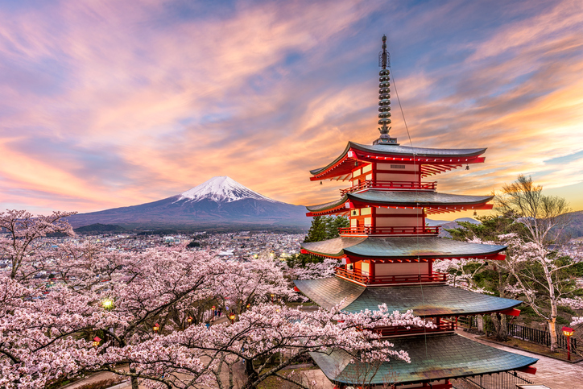

O Japão é uma nação fascinante que mescla tradição e modernidade de maneira única. Com uma rica história milenar, suas tradições, como o chá cerimonial e o ikebana, ainda são cuidadosamente preservadas. Por outro lado, o país é líder em tecnologia e inovação, com cidades vibrantes como Tóquio, onde arranha-céus futuristas se erguem ao lado de templos antigos.
Além de sua riqueza cultural, o Japão é conhecido por sua culinária requintada, que vai muito além do sushi e do sashimi. Com pratos como ramen, tempura e okonomiyaki, a gastronomia japonesa é uma experiência sensorial única que cativa os paladares de todo o mundo. A atenção aos detalhes na preparação dos alimentos é uma expressão da dedicação e do orgulho do povo japonês por sua arte culinária.
A natureza deslumbrante do Japão também merece destaque, desde suas majestosas montanhas, como o Monte Fuji, até suas paisagens costeiras pitorescas. Os japoneses têm uma profunda conexão com o ambiente natural, refletida em práticas como o hanami, a contemplação das flores de cerejeira. Essa combinação de tradição, modernidade, gastronomia e beleza natural torna o Japão um destino verdadeiramente cativante para viajantes de todo o mundo.
Imagens relacionadas:
